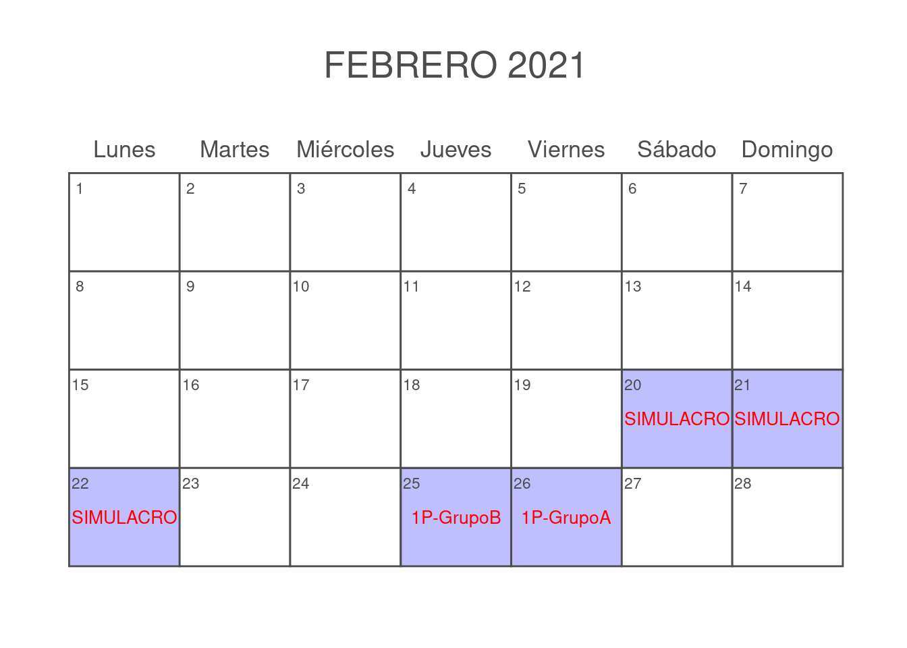

Curso de Matemáticas Tres UCES
2021-07-29
Capítulo 1 Prerrequisitos
El curso de matemáticas tres sólo tiene los siguientes prerrequisitios
1.1 Comportamentales
Tener disposición para hacer silencio y generar un buen ambiente de escucha en el aula de clase.
Tener la capacidad de acatar sugerencias para mejorar las técnicas de estudio ya adquiridas en procesos educativos pasados.
Saber tomar nota mientras el profesor explica los temas de ese día.
Repasar las notas de clase y complementar con la lectura del texto guía según se avanza en el desarrollo temático del curso.
1.2 Evaluativos
Tener los implementos básicos para una evaluación:
Lapicero.
Lapiz.
Borrador.
Calculadora.
Todos los celulares apagados.
Ir al baño antes de iniciar la evalualción.
No hay preguntas en el desarrollo de la evaluación.
Todas la maletas deben estar adelante.
1.3 Fechas de evaluación
1.3.1 GrupoA
Primer parcial (25 \(\%\)) - Fecha: Viernes \(26\) de Febrero
Segundo Parcial (25 \(\%\)) - Fecha: Viernes \(26\) de Marzo
Tercer Parcial (25 \(\%\)) - Fecha: Viernes \(30\) de Abril
Fin de clases 28 de Mayo
Cuarto Parcial (ó Parcial Final) (25 \(\%\)) - Fecha: Viernes \(28\) de Mayo
## ~~ Package calendR
## Visit https://r-coder.com/ for R tutorials ~~
1.4 Video motivacional
Todos tenemos un matemático interno
Título del video en youTube:
Las matemáticas nos hacen libres y menos manipulables. Página Web.
Así ve el mundo un matemático
Así ve el mundo un matemático Página Web
El tipo que te convencerá de que las matemáticas son la profesión del futuro
1.5 Página para reforzar conceptos básicos
El siguiente link es una página para repasar conceptos basicos que requieras en tu formación.Página Web